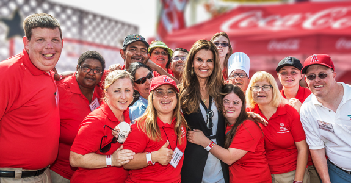

Special Olympics was founded by Eunice Kennedy Shriver, sister of former president John F. Kennedy. It started off as a summer camp at the backyard of Shriver's home that housed many individuals with disabilities. In 1968, the inaugural Special Olympics games were held in Soldier Field. The event was hosted by the Kennedy Foundation and the Chicago Park District. It consisted of many special needs athletes from different parts of the U.S. and Canada. Since then, the Special Olympics has gone from a local event to a national and global phenomenon. It has also transformed the lives of intellectually disabled through sports.
Let Me Win But
But If I Cannot Win
Let Me Be Brave
In The Attempt


Global Messengers are Special Olympics athletes who help spread the message and vision of the movement as well as the benefits they have gained by participating in Special Olympics. As leaders and message-bearers of the movement, Global Messengers communicate the powerful declarations of hope, acceptance, dignity and courage of Special Olympics athletes around the world. Only athletes can effectively relate the impact that the movement has had on their lives and the lives of their families. The Sargent Shriver Global Messenger program, as part of Special Olympics Athlete Leadership Programs (ALPs), offers public speaking and presentation skills training to athletes interested in representing the movement. Every two years, 12 athletes are selected to train through the Sargent Shriver International Global Messenger program and serve as primary spokespeople on behalf of Special Olympics, appearing in national and international media outlets and delivering addresses before large audiences. The Global Messengers come from around the globe, reflecting the scope and reach of the movement, and have proven to be the movement's most effective spokespersons. Through their appearances in the media and in speeches to civic and business groups, the Global Messengers carry forth the themes that are most important to athletes in Special Olympics Programs around the world.
Special Olympics
1133 19th St. N.W
Washington D.C. 20036
Phone:1-(800)-700-8585